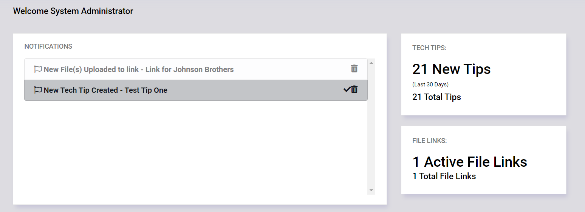
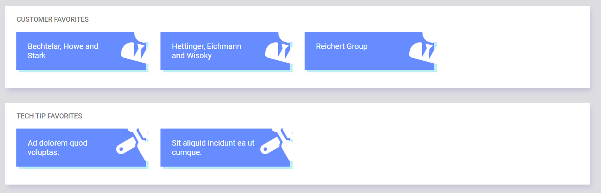

Dashboard¶
After logging in, you will be taken to the application Dashboard. This screen shows any new notifications recieved, and a quick summary of recent Tech Tips and your active File Links (if applicable).
Below the notifications, any Customers or Tech Tips that have been bookmarked will show for quick and easy access.
 